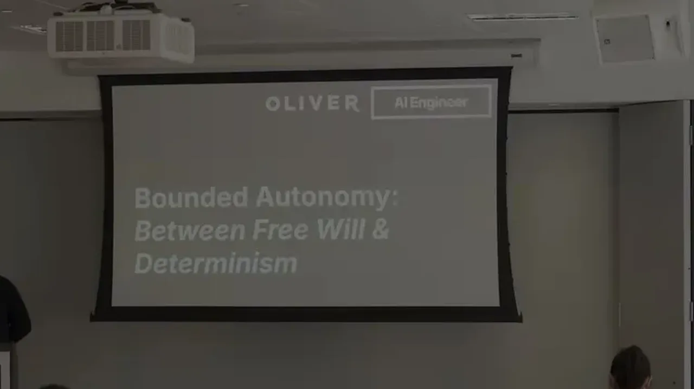
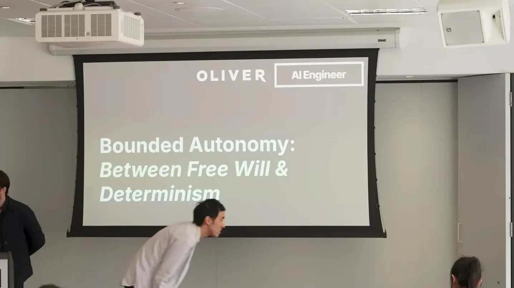
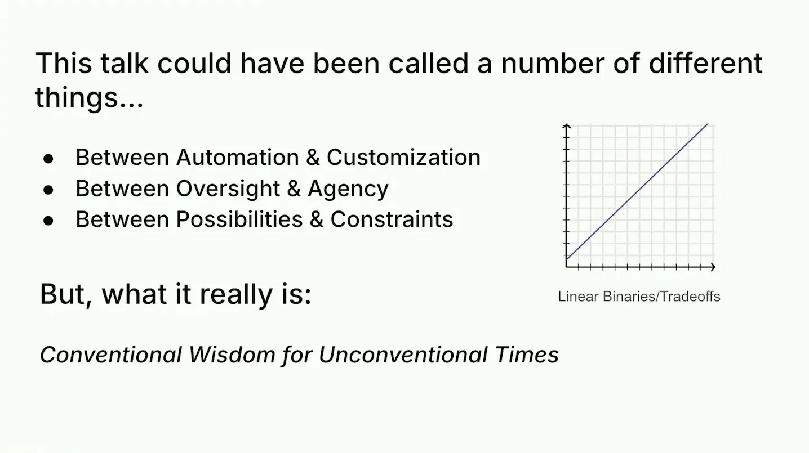
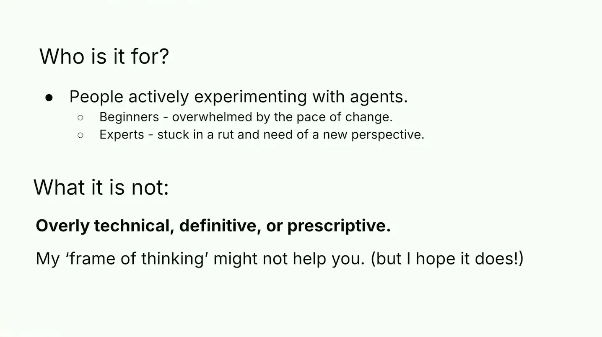
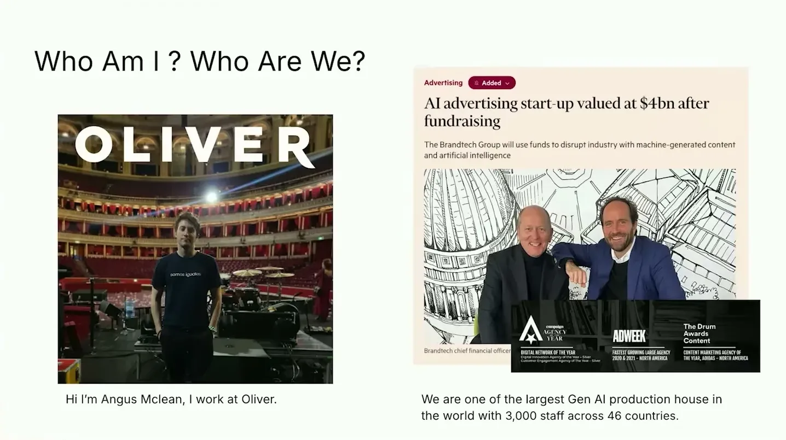
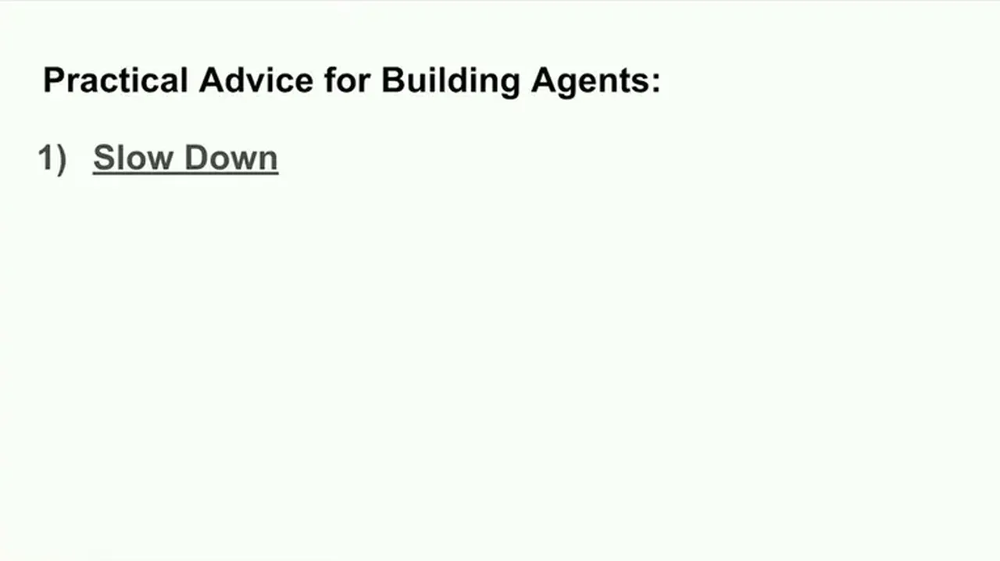
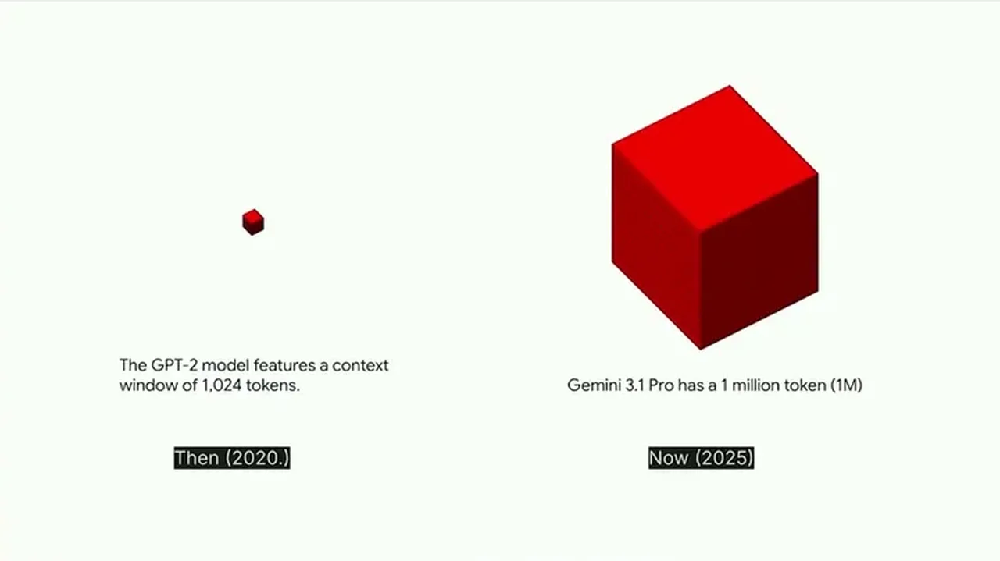
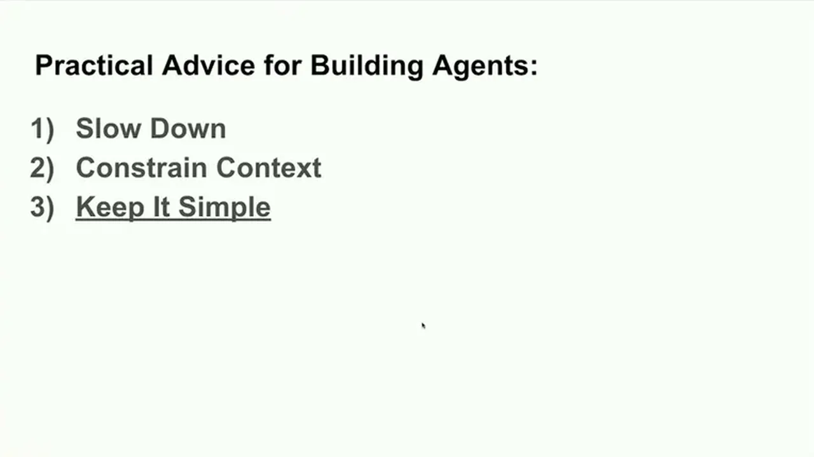
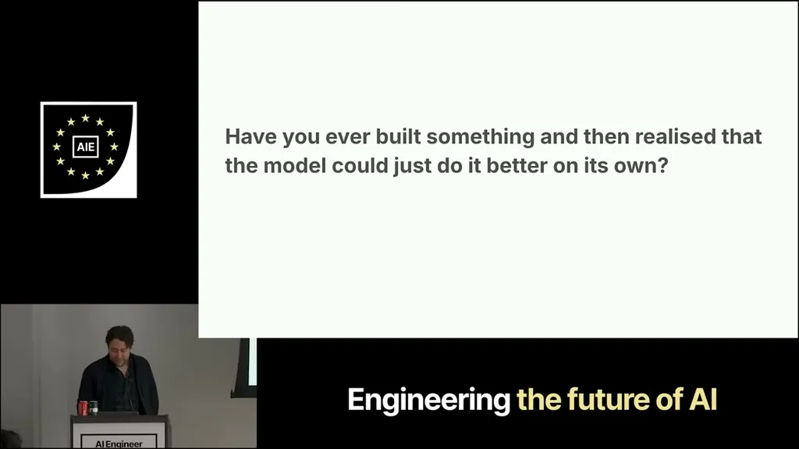

McLean runs strategy for an AI-native ad agency generating around 4,000 assets a day for 200+ brands with real media spend behind them, giving him a fast feedback loop on what actually works
McLean's argument runs from LLMs' fixed limitations, through his claim that context is a soft constraint that will never be 'enough,' to a deliberate-shrinkage technique validated by his own CV experiment (ours). We read Oliver's ad-spend feedback loop as the source of that conviction, though McLean doesn't state the causal link explicitly (ours).
“we generate around 4,000 assets a day for more than 200 brands, many of which you've probably interacted with today, maybe even this morning or this afternoon”
said at 01:32“no matter how advanced LLMs seem, today's large language don't actually understand the data they're presented with. And we know this cuz they've still got several clear limitations”
said at 04:37“most of our tools are band-aids and you could argue even the way the models themselves are being trained is a form of band-aid, right”
said at 05:42“most recent advances in agentic capabilities have been largely due to increased context window. This is especially true with like long-running agents because the longer context windows allows them to do longer running tasks”
said at 06:42“the total knowledge in the world keeps doubling about every 12 hours, so we're always going to want more”
said at 07:43“it was I was pretty uh blown away by this. So that was over a 10x improvement. I'd say it's probably a 100x improvement”
said at 11:51The 'context as soft constraint, not hard constraint' framing is a useful reversal of the usual context-engineering advice to just add more retrieval -- McLean is arguing the harder skill is subtraction, which tracks with his separate point about noise/SEO pollution in tool outputs (ours).









| Stance | Claim | t |
|---|---|---|
| warns | No matter how advanced LLMs seem, they don't actually understand the data they're presented with, and models don't continuously learn without forgetting the way humans do. | 04:37 |
| warns | Most agent tooling, and even how models themselves are trained, functions as temporary band-aids around LLM limitations rather than long-term solutions. | 05:42 |
| asserts | Most recent advances in agentic capability come from increased context windows, which enable longer-running agent tasks by storing history of actions, tool outputs, structure, goals and plans. | 06:42 |
| predicts | Because total world knowledge doubles roughly every 12 hours, context windows will keep growing but will never be enough. | 07:43 |
| asserts | McLean's complex custom CV application performed worse than a version built in plain HTML, roughly a 10x improvement from simplifying. | 11:51 |
| asserts | Oliver generates around 4,000 AI-generated assets a day for more than 200 brands and puts real media spend behind them, giving a faster feedback loop on what performs. | 01:32 |
Machine-readable copy embedded in this page (script#ontology) and in the corpus ontology.